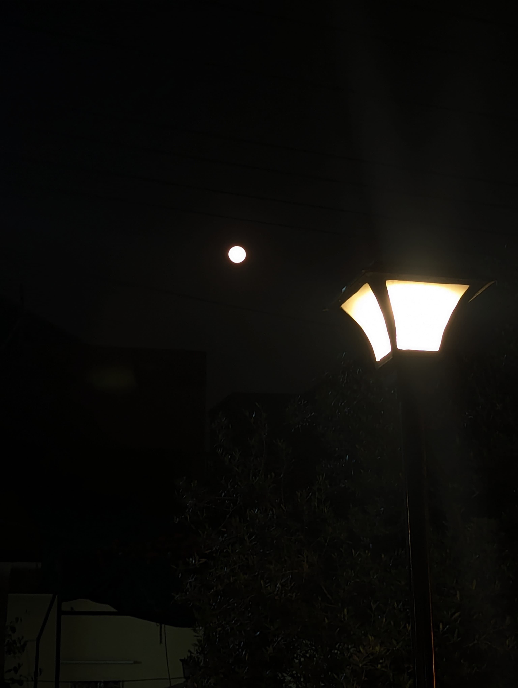
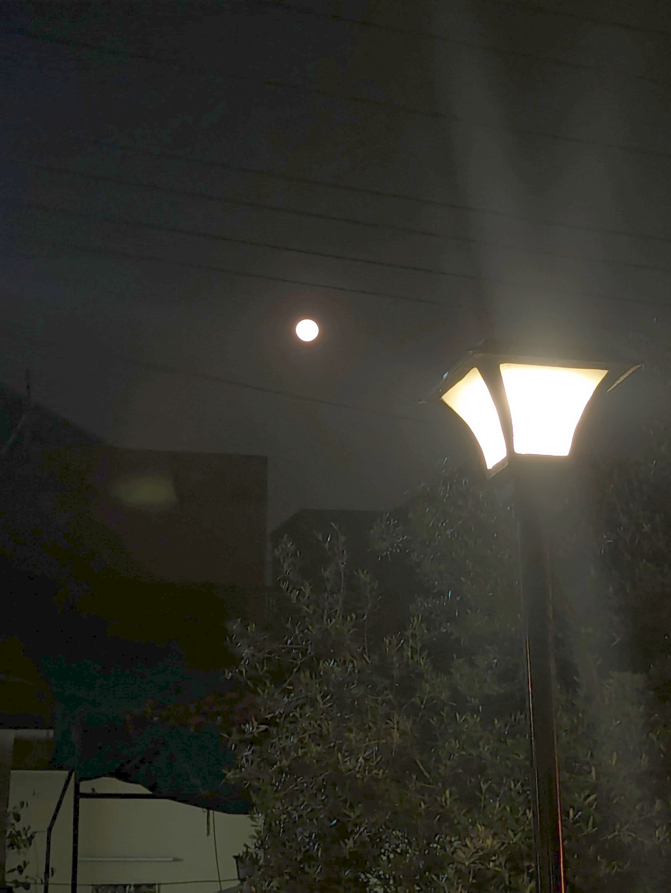
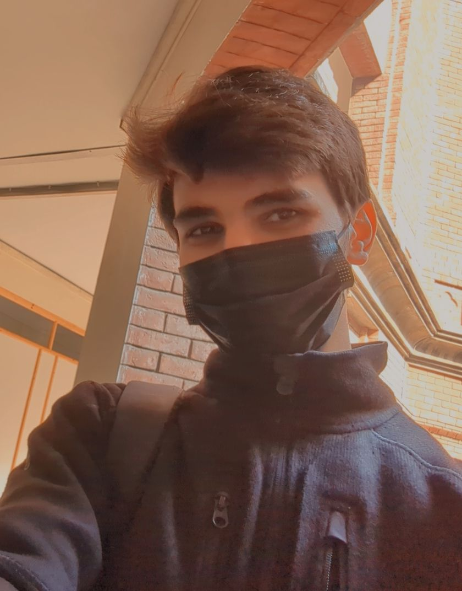

Luminary is a professional digital image processing tool that enhances your images in high quality.
Everything is processed directly on your device, ensuring complete privacy.


OriginalEnhanced
Enhance your images like never before.
Built for Quality
Engineered with precision.
Advanced optical algorithms designed to deliver reliable results
for every kind of image workflow.
✦
Crystal Clear Clarity
Sophisticated edge detection and de-noise patterns that restore lost textures without artefacts.
◎
Vibrant Color
Mathematical mapping of colour spaces to ensure natural skin tones and vibrant environmental palettes.
⬡
Privacy-First Processing
Your images never leave your device. All processing is handled strictly using your computer's hardware.
How it works
Upload, adjust, compare, download
1
Upload Locally
Drag and drop any high-res image. Files are held in browser memory, never uploaded to a server.
2
Choose Your Effect
Pick from 11 purpose-driven enhancement modes to elevate your images and give them a new life.
3
Compare & Export
Use the precision split-view to evaluate your changes, then download lossless PNG output.
Zero-Data Policy
Your vision, your data.
We believe in honest technology. Luminary is different from other tools.
All processing is handled locally inside your browser window without
sending a single byte to an external server.
No Registration Required
100% Local Processing
Frequently Asked
Luminary uses the browser's Canvas API to process images directly inside your browser window without sending a single byte to an external server. Your images are loaded into memory, manipulated pixel-by-pixel using mathematical algorithms, and the result is offered for download.
Luminary supports JPEG, PNG, WebP, GIF, and BMP and any format your browser can render. Output is always lossless PNG to preserve maximum quality.
Yes. Luminary is completely free with no watermarks, no usage limits, and no registration. It was built as my personal project to demonstrate browser-native image processing.
Ready to enhance? Start right now.
Start improving your images with professional tools today. No registration needed.
—No image—
OriginalEnhanced
Applying effect…
About Luminary
Algorithms Meets Artistry.
Luminary started as a university project and grew into something more deliberate.
It's a study in what browser-native image processing can actually do when you stop
offloading work to the cloud and start trusting the hardware in front of you.
99.9%
Local processing
Zero
Data retention
"The most powerful tool is the one that respects the creator's autonomy."
Good imaging tools should be precise, explainable, and fast,
not dependent on a server you don't control. Luminary is built on that principle.
End-to-End Local
Your GPU does the heavy lifting. I don't upload your high-res originals to any server for processing.
Ephemeral Sessions
Once you close the app, all temporary buffers are purged. The tool leaves no digital footprint behind.
Zero-Lease AI
Processing is mathematical. No AI models are involved. Your personal style is never used to train anything.

The Mission
"I believe the best software is built with singular focus and a deep respect for the user."
Studying Digital Image Processing at GCU made me realise how much depth sits behind something as ordinary as adjusting brightness.
Gamma curves, histogram statistics, convolution kernels, these are elegant ideas, and most people never see them because they're
buried inside closed software.
I wanted to build something that exposed that elegance directly. A tool where each button corresponds to a real algorithm,
where the output is deterministic and explainable, and where the whole thing runs in a browser tab without asking for
anything in return.
Muhammad Ahmad
Student Developer, studying @ GCU Lahore
Ready to see through the Luminary lens?
Experience the power of professional imaging tools that finally put your privacy first.
Privacy Policy
Your data. Full stop.
Luminary operates on a zero-data architecture. We collect nothing. We store nothing. We transmit nothing.
Local Processing
All image manipulation happens inside your browser using the Canvas API. Your files are never transmitted to any server. The moment you close the tab, all data is discarded.
No Cookies. No Tracking.
Luminary does not use analytics, tracking pixels, or third-party cookies. We use localStorage only to remember your UI preferences (theme).
No Account Required
There is no login, no sign-up, no email capture. Luminary is a tool, not a platform.